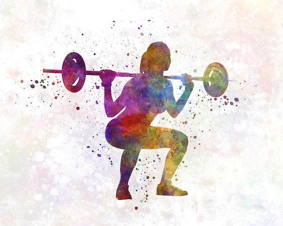
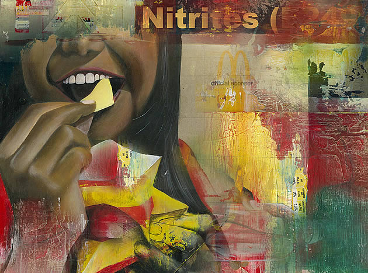

How well your body functions affects your ability to accomplish your daily activities. Sedentary behavior—which usually means sitting or lying down while awake—has been linked to a shorter lifespan and a wide range of medical problems. Any time you get up and move, you’re improving your chances for good health.
2. Maintain your body

Your bones, muscles and joints all work together to make your body an amazingly movable machine. Like any machine, your body can suffer some wear and tear. It needs regular care and maintenance to keep moving with ease.
3. Eat a healthy diet
We make dozens of decisions every day. When it comes to deciding what to eat and feed our families, it can be a lot easier than you might think to make smart choices. A healthy eating plan not only limits unhealthy foods, but also includes a variety of healthy foods. Find out which foods to add to your diet and which to avoid.
4. Built healthy habits

We know that making healthy choices can help us feel better and live longer. Maybe you’ve already tried to eat better, get more exercise or sleep, quit smoking, or reduce stress. It’s not easy. But research shows how you can boost your ability to create and sustain a healthy lifestyle.